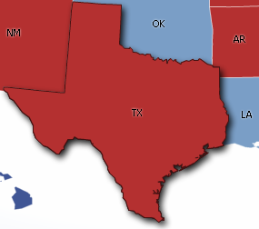
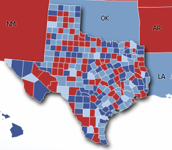

Screen Shot(s)

| Oracle Fusion Middleware Data Visualization Tools Tag Reference for Oracle ADF Faces 12c (12.2.1) E52773-01 |
dvt:thematicMap thematicMap thematic map
UIComponent class: oracle.adf.view.faces.bi.component.thematicMap.UIThematicMap
Component type: oracle.dss.adf.thematicMap.ThematicMap
The thematic map is used for displaying data that is associated with a geographic location. One of the primary uses of this component is to show trends or patterns in data with a spatial element to it. The thematic map does this by using the data to sylize a region (e.g. assigning fill color based on data values), associating a marker with the region, or both.
The thematic map was designed to portray data cleanly so that inherent spatial patterns and trends can be easily seen. Because of this goal, the thematic map doesn't include geographic or political features such as rivers or roads because those would only add visual clutter. If these features are required, then using the <dvt:map> tag would be better suited to your application.
The <dvt:thematicMap> tag and its child tags were designed to mimic what gets displayed on the map. This is discussed further in the Basemaps section and the section describing the difference between the <dvt:areaLayer> tag and the <dvt:areaDataLayer> tag . The thematic map uses the stamp design pattern to stylize the geographic regions.
The different maps the thematic map displays are called basemaps. The thematic map comes pre-shipped with a number of basemaps, including a USA basemap, a world basemap, as well as basemaps for continents and regions of the world such as EMEA and APAC. Since the basemaps come pre-shipped, the thematic map does not need a map service to serve up maps for it to display. Use the <dvt:thematicMap> tag's "basemap" attribute to set which basemap is shown.
Each basemap has multiple layers, with each layer representing a set of regions at different levels in the spatial hierarchy. For example, in the USA basemap, there are three layers. There is a layer that shows the national border, a layer that shows all the states, and a third layer that shows all the counties in the USA. Use the <dvt:areaLayer> tag to set which basemap layers are shown.
In addition to layers for different geographic regions, each basemap also has a layer of built-in cities. If you want to use other points that are not included in the set of built-in cities, they can be specified by providing latitude and longitude coordinates (see the <dvt:pointLocation> tag for more details).
The <dvt:areaLayer> tag is used to define which layers in a given basemap are shown. To stylize the regions in this layer, insert an <dvt:areaDataLayer> tag as a child tag to the <dvt:areaLayer> tag. Bind a data control to the <dvt:areaDataLayer> tag's "value" attribute.
The <dvt:areaDataLayer> tag follows the stamping model to stylize each region in its given layer. Insert the <dvt:areaLocation> tag as a child to <dvt:areaDataLayer> to specify which column in the data control specifies the name of the spatial region with which the data is associated. Insert a <dvt:area> tag as a child to the <dvt:areaLocation> tag to sylize a region (e.g. assigning fill color based on data values) and insert a <dvt:marker> tag to associate a marker with the region. Conceptually, the tag structure would look as follows:
<thematicMap >
<areaLayer >
<areaDataLayer >
<areaLocation >
<area>
</area>
</areaLocation>
</areaDataLayer>
</areaLayer>
</thematicMap>
See the Sample section for a more developed example.
Use the data binding dialogs to bind the <dvt:areaDataLayer> and <dvt:pointDataLayer> tags to data controls. The thematic map uses a Collection Model (see data binding documentation for details).
The thematic map supports the use of the <dvt:attributeGroups> tag for generating stylistic attribute values such as colors or shapes for stamps based on categorical bucketing of the data set. Given the column in the model to group by, the attributeGroups can produce style values for each unique value ("group") in the data. The thematic map currently supports <dvt:attributeGroups> as a child of <dvt:marker> and <dvt:area>.
The legend is a component which is used to display multiple sections of marker and label pairs. Define the legend as a child of the thematic map component. For more detail, please refer to the <dvt:legend> tag doc and examples below.
To include a marker or area as an item in the legend, point the "source" attribute of a legendSection to the id of the marker or area component. Add <f:attribute> as shown below to annotate the marker with a label to be used in the legend.
<dvt:thematicMap id="map" basemap="usa">
<dvt:legend id="l1" label="Legend Title">
<dvt:legendSection id="ls1" label="Legend Subtitle 1" source="al1:adl1:marker1" />
</dvt:legend>
<dvt:areaLayer id="al1" layer="states">
<dvt:areaDataLayer id="adl1" value=" " var=" " ...>
<dvt:areaLocation id="dataLoc" name="#{row.name}">
<dvt:marker id="marker1">
<f:attribute name="legendLabel" value="Important Location" />
</dvt:marker>
</dvt:areaLocation>
</dvt:areaDataLayer>
</dvt:areaLayer>
</dvt:thematicMap>
To select a particular set of attribute types (color, shape, etc.) to include in the legend as a separate section, point the "source" attribute of a legendSection to the id of the desired attributeGroups component. Use the "label" attribute on attributeGroups as shown below to annotate this set of attributes with a label to be used in the legend.
<dvt:thematicMap >
<dvt:legend id="l1" label="Legend Title">
<dvt:showLegendGroup id="slg1" label="Legend Subtitle 2">
<dvt:legendSection id="ls2" source="al1:adl1:attributeGroupColor" />
<dvt:legendSection id="ls3" source="al1:adl1:attributeGroupShape" />
</dvt:showLegendGroup>
</dvt:legend>
<dvt:areaLayer id="al1" layer="states">
<dvt:areaDataLayer id="adl1" value=" " var=" " ...>
<dvt:areaLocation id="dataLoc" name="#{row.name}">
<dvt:marker id="marker1"... >
<dvt:attributeGroups id="attributeGroupColor" type="color" label="#{row.category1Label}" ... />
<dvt:attributeGroups id="attributeGroupShape" type="shape" label="#{row.category2Label}" ... />
</dvt:marker>
</dvt:areaLocation>
</dvt:areaDataLayer>
</dvt:areaLayer>
</dvt:thematicMap>
The thematic map component lets users to select multiple regions/markers across multiple data layers. For details, please refer to the <dvt:areaDataLayer> and <dvt:pointDataLayer> tag docs.
The thematic map component supports drilling on areas. Drilling is essentially revealing data directly underneath the area being drilled. An area has to be selected before being drilled. This can be achieved by setting the selectionMode property on the areaDataLayer or pointDataLayer. For details, please refer to the <dvt:areaDataLayer> and <dvt:pointDataLayer> tag docs. Below shows an example where the user drills down on Texas:
| Before Drill | After Drill |
|---|---|
|  |  |
Areaand marker within a thematic map can be used as drag source while an areaLayer can be used as a drop Target. For detail, please refer to the tag docmentation of the <dvt:area>, <dvt:marker> and the <dvt:areaLayer>
The thematic map component supports animation for the following cases: initial rendering, the value of base map changes, the value of an area data layer or point data layer changes and drilling.
<thematicMap id="thematicMap" basemap="usa">
<areaLayer id="areaLayer" layer="states">
<areaDataLayer id="dataLayer" value="#{mydata.collectionModel}" var="row" varStatus="rowStatus">
<areaLocation id="areaLoc" name="O__row_name_">
<area id="area" fillColor="#{row.color}">
</area>
</areaLocation>
</areaDataLayer>
</areaLayer>
</thematicMap>
The <dvt:thematicMap> tag can have the following children:
| Type | Phases | Description |
|---|---|---|
| org.apache.myfaces.trinidad.event.AttributeChangeEvent | Invoke Application, Apply Request Values |
Event delivered to describe an attribute change. Attribute change events are not delivered for any programmatic change to a property. They are only delivered when a renderer changes a property without the application's specific request. An example of an attribute change event might include the width of a column that supported client-side resizing. |
| Name | Type | Supports EL? | Description |
|---|---|---|---|
| animationDuration | int | Yes | Default Value: 1000 Specifies the animation duration in milliseconds. The default value is 1000. |
| animationOnDisplay | String | Yes | Valid Values: none, alphaFade, conveyorFromLeft, conveyorFromRight, cubeToLeft, cubeToRight, flipLeft, flipRight, slideToLeft, slideToRight, transitionToLeft, transitionToRight, zoom Default Value: zoom Specifies the type of animation to apply when the component is initially displayed. |
| animationOnDrill | String | Yes | Valid Values: none, alphaFade Default Value: alphaFade Specifies the type of animation to apply for drilling. |
| animationOnMapChange | String | Yes | Valid Values: none, alphaFade, conveyorFromLeft, conveyorFromRight, cubeToLeft, cubeToRight, flipLeft, flipRight, slideToLeft, slideToRight, transitionToLeft, transitionToRight, zoom Default Value: none Specifies the type of animation to apply when the value of the basemap changes. |
| attributeChangeListener | javax.el.MethodExpression | Only EL | a method reference to an attribute change listener. Attribute change events are not delivered for any programmatic change to a property. They are only delivered when a renderer changes a property without the application's specific request. An example of an attribute change events might include the width of a column that supported client-side resizing. |
| basemap | String | Yes | Specifies the basemap shown by the thematic map. Valid values are:
|
| binding | String | Only EL | Binding reference to store the UIThematicMap component |
| controlPanelBehavior | String | Yes | Valid Values: initCollapsed, initExpanded, hidden Default Value: initCollapsed Specifies the behavior of the control panel. Valid values are:
|
| drillBehavior | String | Yes | Valid Values: none, zoomToFit Default Value: none Specifies additional effect for drilling
|
| drilling | String | Yes | Valid Values: off, on Default Value: off Specifies whether drilling should be on or off for this thematic map. The default value is off |
| featuresOff | java.util.Set | Yes | Default Value: none This attribute is deprecated. A list of default features to turn off for the thematicMap. Currently the supported values are "pan", "zoom", "zoomToFit". |
| id | String | No | the identifier for the component |
| initialZooming | String | Yes | Valid Values: auto, none Default Value: none Specifies whether the viewport is zoomed to fit the data on initial display. |
| inlineStyle | String | Yes | The inline style of the thematic map's outer DOM element. |
| maintainDrill | boolean | Yes | Default Value: false Specifies whether to maintain previously drilled area in the same layer when a new area is drilled. The default value is false |
| mapProvider | oracle.adf.view.faces.bi.component.thematicMap.mapProvider.MapProvider | Yes | The MapProvider for this component. |
| markerZoomBehavior | String | Yes | Valid Values: fixed, zoom Default Value: fixed Specifies the marker behavior on zoom. Markers can either maintain their current size or grow and shrink on zoom. Valid values are:
|
| panning | String | Yes | Valid Values: auto, none Default Value: auto Specifies panning behavior. Valid values are:
|
| partialTriggers | String[] | Yes | the IDs of the components that should trigger a partial update. This component will listen on the trigger components. If one of the trigger components receives an event that will cause it to update in some way, this component will request to be updated too. |
| rendered | boolean | Yes | Default Value: true Specifies whether the component is rendered. The default value is true. |
| source | String | Yes | The path to the custom base map xml metadata file. |
| styleClass | String | Yes | Sets a CSS style class to use for this component. |
| summary | String | Yes | Sets a summary of this thematic map's purpose and structure for user agents rendering to non-visual media (e.g. screen readers). |
| tooltipDisplay | String | Yes | Valid Values: auto, none, shortDescOnly Default Value: auto Specifies the tooltip display behavior of the thematic map. Valid values are:
|
| zooming | String | Yes | Valid Values: auto, none Default Value: auto Specifies zooming behavior. Valid values are:
|